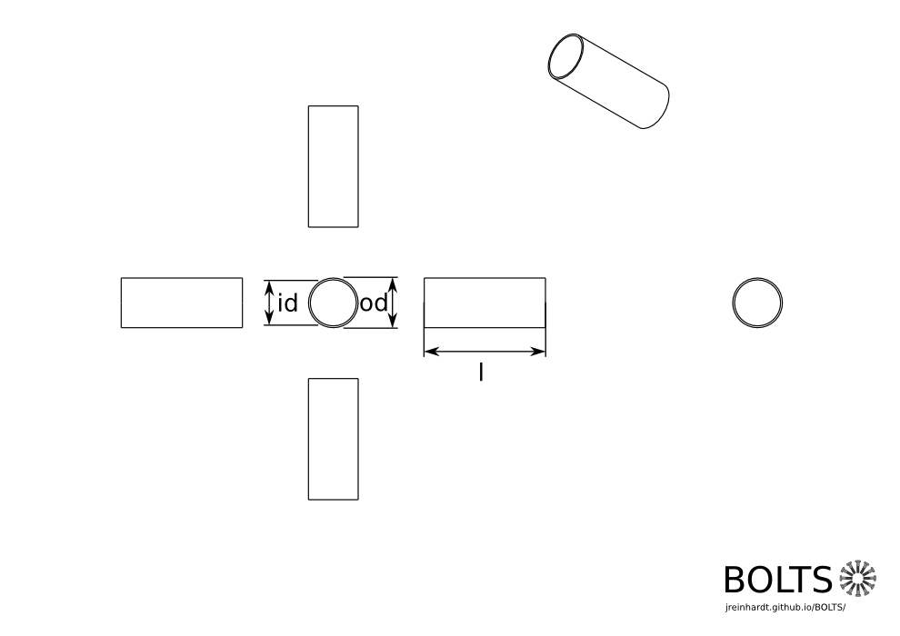

| Author: | Johannes Reinhardt |
|---|---|
| License: | MIT |
| Collection: | Pipes |
| Status: | active |
| Standard body: | DIN |
| Class ID: | din11850range2 |
| Source: | de.wikipedia.org/wiki/Rohr_(Technik)#Abmessungen |
Drawing
| Parameter name | Description |
|---|---|
| dn | nominal diameter |
| od | outer diameter |
| id | inner diameter |
| l | length |
Description
pipeFreeCAD
| Author: | Johannes Reinhardt |
|---|---|
| License: | LGPL 2.1+ |
OpenSCAD
| Author: | Johannes Reinhardt |
|---|---|
| License: | LGPL 2.1+ |
Incantations
{% highlight python %} DIN11850_Range_2(dn="10", l=1000, part_mode="default"); dims = DIN11850_Range_2_dims(dn="10", l=1000, part_mode="default"); {% endhighlight %}Dimensions
| dn | id (mm) | od (mm) |
|---|---|---|
| 6 | 6.0 | 8.0 |
| 8 | 8.0 | 10.0 |
| 10 | 10.0 | 13.0 |
| 15 | 16.0 | 19.0 |
| 20 | 20.0 | 23.0 |
| 25 | 26.0 | 29.0 |
| 32 | 32.0 | 35.0 |
| 40 | 38.0 | 41.0 |
| 50 | 50.0 | 53.0 |
| 65 | 66.0 | 70.0 |
| 80 | 81.0 | 85.0 |
| 100 | 100.0 | 104.0 |
| 125 | 125.0 | 129.0 |
| 150 | 150.0 | 154.0 |
| 200 | 200.0 | 204.0 |